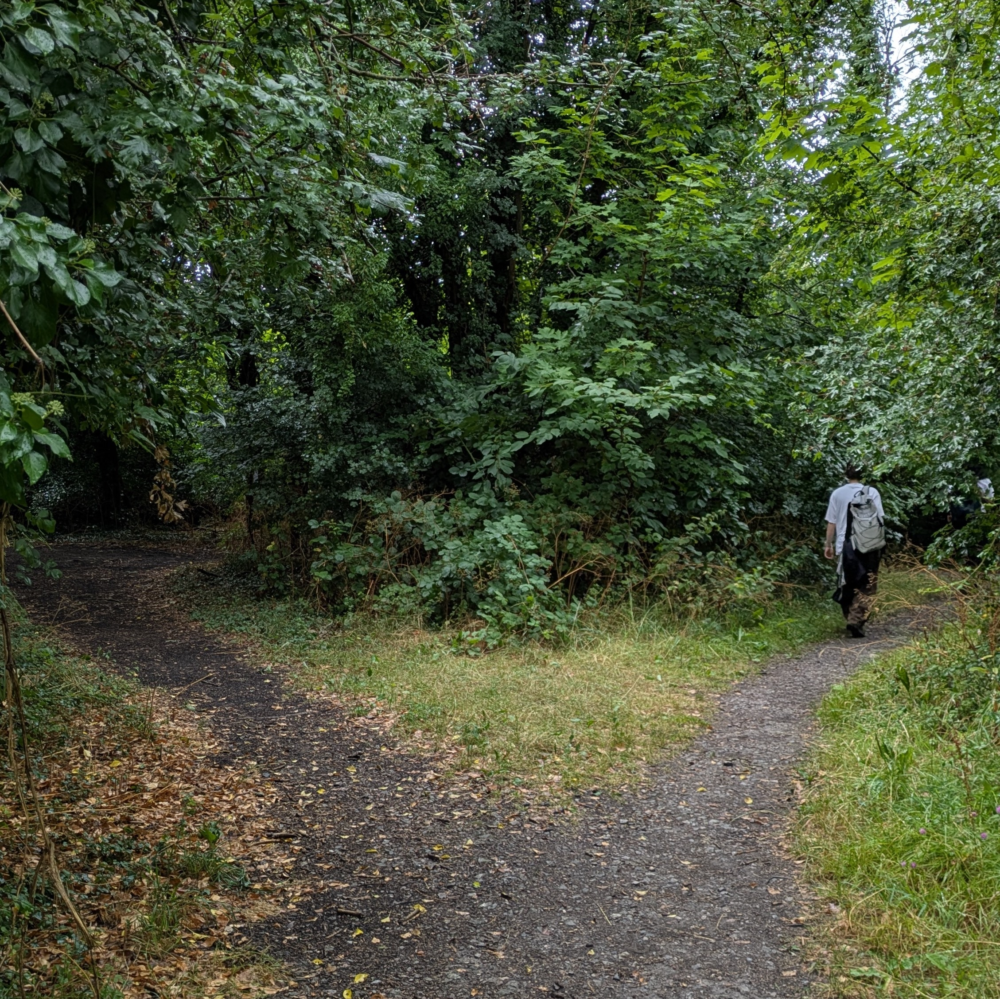

Open research work
With the support of the
Improving Research Community Builder Award, I co-run
Interdisciplinary Open Research symposia for early career researchers
across the arts, humanities, social sciences, and medical sciences. A summary of our
first meeting can be found here.
The King's College London ReproducibiliTea
journal club meets once a month on Thursday afternoons, and is open to
all. Sometimes, we write
public reviews of preprints
to promote open and inclusive research practices. The club has been supported
by ASAPBio and
ReproducibiliTea.
Since 2025, I have been a member of the ReproducibiliTea steering committee.
My focus is on the
post-publication review project.
I also teach postgraduate and doctoral students.
